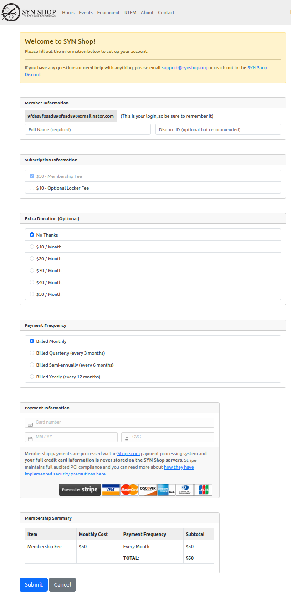

membership website
Intro
Membership is hosted at both membership.synshop.org and membership-dev.synshop.org on new-lagos.synshop.org. It's a python flask app and has a GH Repo.

One time setup
- create DNS entries to server. "server" in this case on lagos-new so
membership.synshop.organdmembership-dev.synshop.orgboth have aCNAMEforlagos-new.synshop.org.See Caddy page which talks about making new DNS entries. -
on server, install pre-reqs:
apt install python3 python3.10-venv certbot debian-keyring debian-archive-keyring apt-transport-https gunicorn -
install
caddykey, repo and binary:curl -1sLf 'https://dl.cloudsmith.io/public/caddy/stable/gpg.key' | sudo gpg --dearmor -o /usr/share/keyrings/caddy-stable-archive-keyring.gpg curl -1sLf 'https://dl.cloudsmith.io/public/caddy/stable/debian.deb.txt' | sudo tee /etc/apt/sources.list.d/caddy-stable.list sudo apt update sudo apt install caddy systemctl start caddy systemctl enable caddy -
edit
/etc/caddy/Caddyfileand put in this contents at the bottom:membership.synshop.org { reverse_proxy localhost:3000 } membership-dev.synshop.org { reverse_proxy localhost:4000 } -
restart caddy:
systemctl restart caddy. These two URLs should now work but have not content: membership and membership-dev - create new
membershipuser on server - create new ed25519 ssh key WITHOUT a password for
membershipon server - add the newly created public SSH key to the Deploy Keys for Membership GitHub Repo. Ensure it is read only when adding it.
-
as
membershipuser, clone the repo twice. You shouldn't be prompted for authentication because of the deploy key step above:git git@github.com:synshop/membership.synshop.org.git /home/membership/membership.synshop.org git git@github.com:synshop/membership.synshop.org.git /home/membership/membership-dev.synshop.org -
as
membershipuser, create a virtualenv for each install:cd /home/membership/membership.synshop.org python3 -m venv venv;. venv/bin/activate deactivate cd /home/membership/membership-dev.synshop.org python3 -m venv venv;. venv/bin/activate deactivate -
as
membershipuser, ensure each repo is on the correct branch:cd /home/membership/membership.synshop.org git fetch git checkout membership.synshop.net cd /home/membership/membership-dev.synshop.org git fetch git checkout membership-dev.synshop.org -
In both repos, ensure we've installed the python pre-reqs:
cd /home/membership/membership.synshop.org . venv/bin/activate pip3 install -r requirements.txt cd /home/membership/membership-dev.synshop.org deactivate . venv/bin/activate pip3 install -r requirements.txt deactivate -
In each repo, create a new config file:
cp /home/membership/membership.synshop.org/config.py.default /home/membership/membership.synshop.org/config.py cp /home/membership/membership-dev.synshop.org/config.py.default /home/membership/membership-dev.synshop.org/config.py -
Edit the 2 newly created
config.pyfiles to have correct values. Be sure to read the service file in the next step on how to Encrypted values. - Copy over two instances
service/membership.serviceandservice/membership-dev.serviceboth to/etc/systemd/system - Edit the the two files in
/etc/systemd/systemto have the right value forENCRYPTION_KEY. - Reload systemd and start and enable the services:
systemctl start membership;systemctl start membership-dev;systemctl enable membership;systemctl enable membership-dev - Reboot server to make sure two services come up
Pushing new content live
- SSH to new-lagos
- switch user to
membershipuser:sudo su - memberhsip - cd into dev or prod:
cd membership.synshop.orgorcd membership-dev.synshop.org - pull in the latest code:
git pull origin - restart the server:
systemctl restart membershiporsystemctl restart membership-dev
Development
TBD